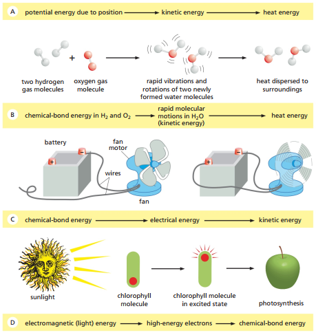

APÉNDICE SOBRE FISIOLOGÍA CELULAR
Bioenergética y metabolismo, parte I: Termodinámica desde la biología celular
La termodinámica es una de esas ramas sumamente mal interpretadas fuera de su campo de aplicación físico, lo cual fácilmente se podría decir de cualquier otra subdisciplina científica, de no ser porque la termodinámica es una de las más abusadas para toda clase de metáforas y especulaciones acerca de la consciencia, la conducta, la vida, la información y hasta la apologética cristiana; unas peores que otras. El propósito de esta entrada no es explicar lo que está mal con la termodinámica como la emplean los biólogos celulares, sino simplemente explicitar la manera en que se enseña y se utiliza, empleando como caso de estudio dos libros de texto introductorios (Alberts et al., 2014; Cooper, 2019) y un artículo científico.
La energía total de un sistema y su entorno permanece constante (Cooper 2019), lo cual normalmente se traduce a la energía no se crea ni se destruye, tan solo se transforma: se convierte de un tipo a otro. Piénsese en los intercambios entre energía cinética y potencial al estudiar la trayectoria de una partícula en descenso vertical. A medida que la partícula cae, su energía gravitacional potencial se reduce mientras que su energía cinética aumenta. En un ejemplo más biológico, la energía química es “convertida” en energía mecánica, como lo que ocurre en la contracción de un músculo.
La Figura 1 ilustra diferentes formas de cambios en tipos de energía, usando primero el ejemplo de un ladrillo en picada. A medida que el ladrillo está suspendido sobre la superficie, este posee una energía potencial gravitacional que se va convirtiendo en energía cinética a medida que desciende, hasta que, al caer, ‘transforma’ su energía cinética en calor liberado.
Del mismo modo, la Figura 1 ilustra un caso donde energía química es almacenada en moléculas de gas e hidrógeno. La cantidad de energía liberada cuando se forman las moléculas de agua lleva a que estas vibren y, por medio de colisiones espontáneas entre moléculas de agua, la energía es eventualmente transferida como calor al entorno.
Figura 1. Las células vivas no ‘desafían’ la segunda ley de la termodinámica. En la izquierda, las moléculas tanto dentro como fuera de la célula exhiben un grado de desorden aparente. La célula, a través del metabolismo, ordena las moléculas en su interior mientras que aumenta la cantidad de desorden en el entorno a través de la liberación de calor (Alberts et al., 2014, p. 87).
El grado de desorden (o entropía) en un sistema incrementa con el paso del tiempo (Cooper, 2019). Cooper no entra en detalle sobre lo que el desorden o la entropía implica, tan solo esperando que sea comprensible a través de una serie de ejemplos biológicos. Intuitivamente, afirma Cooper, las células parecen violar la segunda ley en la medida que los precursores de sus componentes son menos ordenados: las proteínas son polímeros ordenados de aminoácidos, por lo cual la síntesis de proteína implica una reducción (en vez de un aumento) de entropía.
Más allá de la definición de desorden o entropía implicada en el texto, Cooper resuelve el fallo intuitivo haciendo referencia a que las células son sistemas abiertos, por lo cual intercambian energía con el entorno. Esto quiere decir que el aumento de entropía puede ser balanceado a través del entorno. La totalidad sistema-entorno puede aumentar su entropía sin que el incremento se vea estrictamente manifestado en el sistema celular en sí mismo. Cooper (2019) afirma que una reacción química reduce la entropía del sistema en tanto el calor liberado por la reacción sea suficiente para generar un incremento mayor de entropía en el entorno (el cual compense por el orden generado dentro de la célula). La Figura 2 ilustra cómo el aumento de ‘orden’ en la célula implica un aumento de ‘desorden’ en el entorno.
Figura 2. Las células vivas no ‘desafían’ la segunda ley de la termodinámica. En la izquierda, las moléculas tanto dentro como fuera de la célula exhiben un grado de desorden aparente. La célula, a través del metabolismo, ordena las moléculas en su interior mientras que aumenta la cantidad de desorden en el entorno a través de la liberación de calor (Alberts et al., 2014, p. 86).

La energética de las reacciones bioquímicas es descrita en términos de la función deltada de la energía libre de Gibbs (G) (Cooper, 2019). La Ecuación 1 ilustra que el cambio en energía libre de Gibbs, o ΔG, es igual al cambio en entalpía (ΔH) menos el producto de la temperatura absoluta (T) por el cambio en entropía (ΔS).
La entalpía se refiere al calor liberado o absorbido durante una reacción química.
En el caso químico hipotético donde A pueda ser convertido a B:
Las reacciones químicas ocurrirán espontáneamente en la dirección energéticamente favorable, es decir, aquella que implique una reducción de energía libre (ΔG < 0). Entonces, si para A → B la reacción implica ΔG < 0, entonces la reacción ocurrirá en la dirección hacia delante, mientras que si la reacción implica ΔG > 0 esta irá en dirección contraria. Es decir, se favorecen direcciones de reacciones químicas donde ΔG es negativo. Esto se debe a que la segunda ley de la termodinámica necesita que las reacciones químicas procedan solo si el resultado implica un aumento en el ‘desorden’ del universo. Por ello, solo cuando energía libre de Gibbs es perdida se favorece esa dirección espontáneamente. Así, las reacciones energéticamente favorables son aquellas que aumentan el desorden a través de la reducción energía libre de Gibbs.
Puesto que el ΔG de una reacción es una función tanto de las propiedades intrínsecas de los reactivos y los productos como de las condiciones del entorno (temperatura, concentraciones), los cambios de energía libre se definen bajo condiciones estándares: concentración 1-M de todos los reactivos y productos y 1 atm de presión.
En condiciones estándares, se puede determinar el cambio estándar de energía libre de Gibbs (ΔG°) de una reacción. Una vez definido el estado estándar, ΔG° se entiende convencionalmente como una propiedad característica de la reacción química misma.
Ahora bien, con un entendimiento de ΔG° y la razón de concentración [B]/[A] para una reacción A→B dada, es posible también determinar ΔG ya que este es una función de ambas. Así, la Ecuación 2 ilustra un segundo método para determinar ΔG si se conoce ΔG° para la reacción:
En el caso químico hipotético donde A pueda ser convertido a B:
Es decir, el cambio de energía libre de Gibbs es igual a la sumatoria de dos términos, el primero siendo el cambio estándar de energía libre de Gibbs de la misma reacción química más el producto de la constante de gas (R) por la temperatura absoluta (T) y el logaritmo natural de la razón de las concentraciones de B y A.
En el caso donde ΔG sea igual a 0, esto quiere decir que la reacción no procede con una preferencia direccional, lo cual se conoce como punto de equilibrio. Es decir, la reacción ocurre en tasas iguales en ambas direcciones. Para que ΔG sea igual a 0, ΔG° y RT ln [B]/[A] deben ser iguales en magnitud y contrarios en signo. Defínase la concentración a la que ΔG=0 como K=[B]/[A], así, adquirimos la Ecuación 3:
En el caso químico hipotético donde A pueda ser convertido a B:
Lo cual nos arroja la Ecuación 4:
En el caso químico hipotético donde A pueda ser convertido a B:
Y en este sentido RT ln K está directamente relacionado a ΔG°, siendo igual en magnitud y opuesto en signo.
Así, si la razón real [B]/[A] es mayor que la razón de equilibrio (K), ΔG > 0, por lo cual la reacción ocurrirá en la dirección contraria (de B hacia A). Por último, si [B]/[A] es menor que K, entonces ΔG < 0, lo cual implica que se favorecerá la reacción de A hacia B.
Para propósitos bioquímicos, ΔG° no es particularmente útil ya que las condiciones celulares difieren. Por ello, se emplea el cambio en energía libre de Gibbs ΔG°’, el cual implica una solución acuosa de pH = 7.
Alberts, B., Bray, D., Hopkin, K., Johnson, A., Lewis, J., Raff, M., Roberts, K., & Walter, P. (2014). Essential cell biology (4th ed.). Garland Science
Cooper, G. M. (2019). The cell: A molecular approach (8th ed.). Oxford University Press
Freddy J. Molero-Ramírez
fmolero@mail.uniatlantico.edu.co